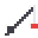

Wiki do Luthor Life

AtividadesNovo por aqui?
Comece pelos primeiros passos e pelos controles. Depois, veja o que cada pessoa ama na página de presentes.

AtividadesComece pelos primeiros passos e pelos controles. Depois, veja o que cada pessoa ama na página de presentes.